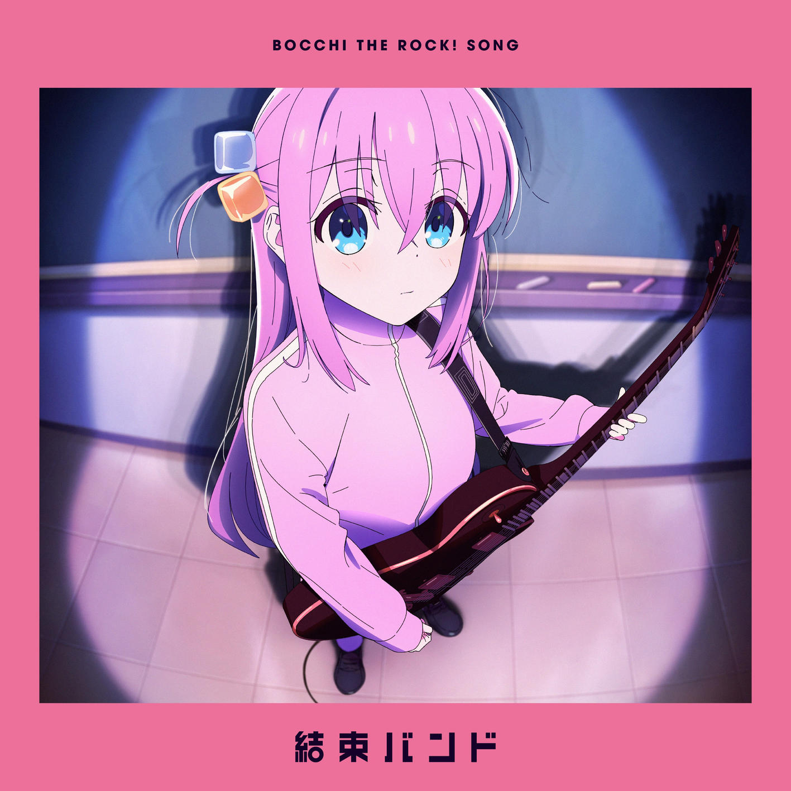
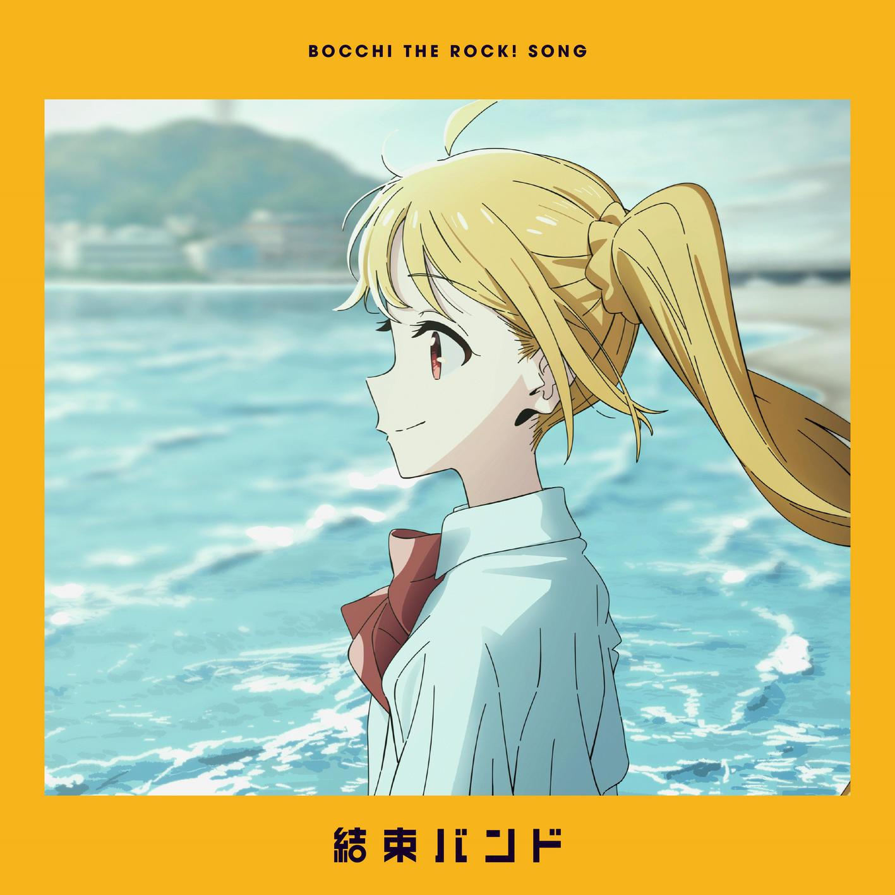
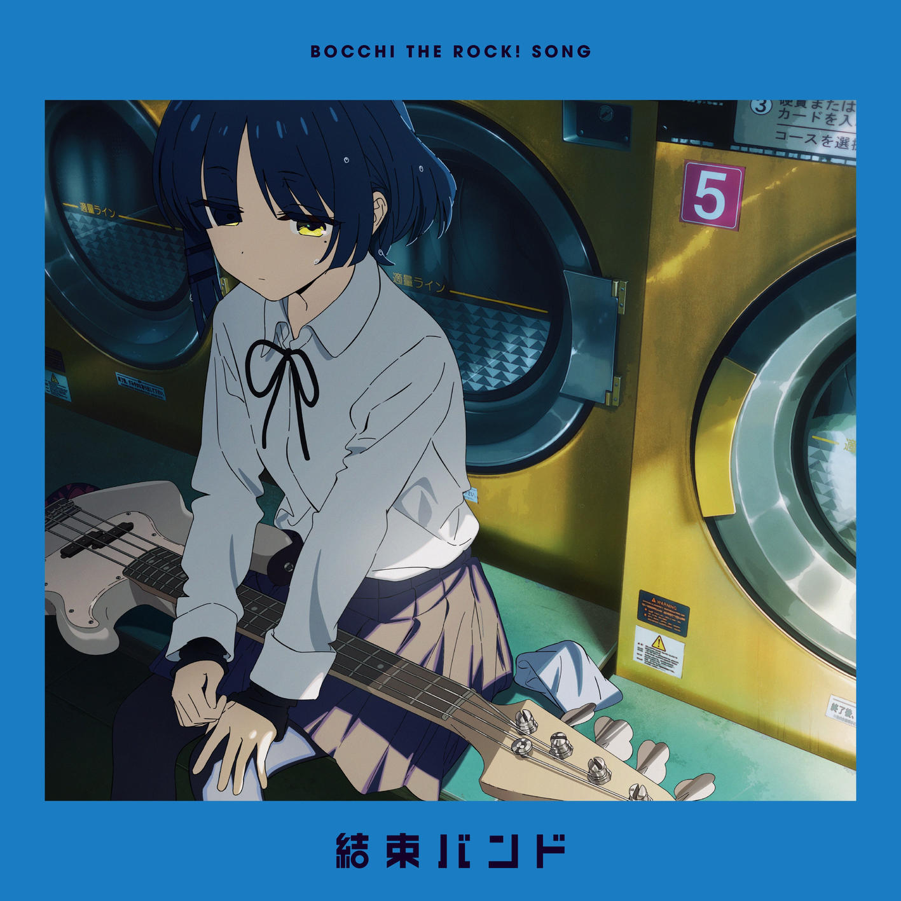
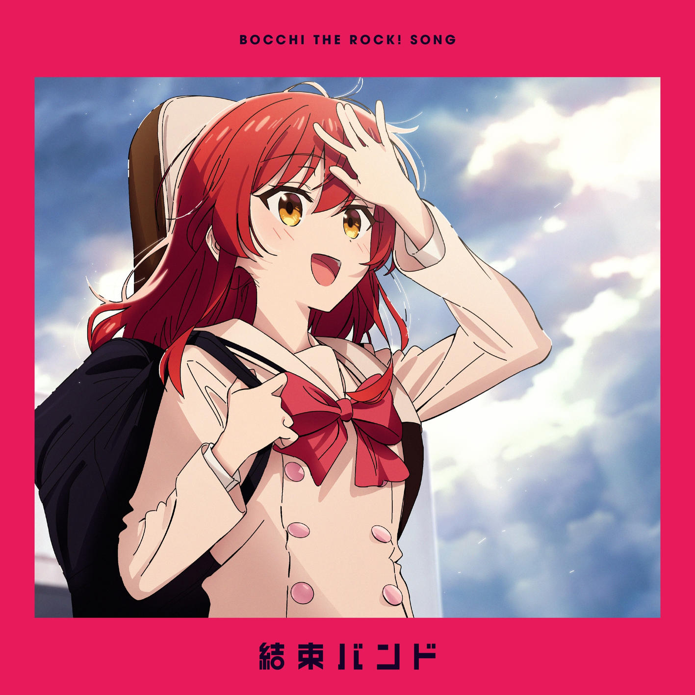

结束乐队（日文：結束バンド）是《孤独摇滚！》及其衍生作品中登场的一个架空的乐队
结束乐队是由伊地知虹夏创立的女高中生乐队，现有4人。 结束乐队的主要活动场所是由伊地知星歌开设的Livehouse“STARRY”。 与学校社团不同，结束乐队并不受到社团经费的影响。但是，结束乐队得承担在Livehouse演出的定额，这可比获取社团经费更加困难。 乐队名字中的“結束（けっそく）”意为“团结”。此外，結束バンド也有“束线带”之意，这就与“结束乐队”形成了一对双关语。在漫画第14话（动画第9话）中，伊地知星歌曾因乐队其余三人都没有在暑假邀请后藤一里出去玩，而认为她们失去了团结力（結束），吐槽她们换个乐队名算了。
包括后藤一里Gotoh Hitri(Guitar)，伊地知虹夏Ijichi Nijika(Drum)，山田凉Yamada Ryo(Bass)，喜多郁代Kita Ikuyo(Vocal&Guitar)四人




《孤独摇滚》中，结束乐队的代表作包括《ギターと孤独と蒼い惑星》、《星座になれたら》、《忘れてやらない》等。